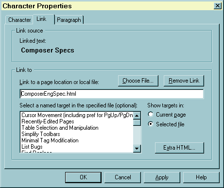
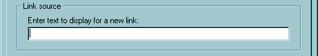
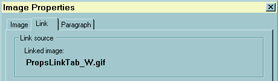
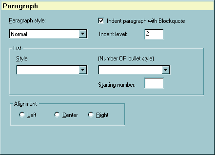

|
 |
|
 |
|
|
Character Property Dialogs
There are four Tabbed Dialog Panes that make up a related set. When
a single image is selected or the user is inserting an image, the first
pane is the Image Properties
pane, followed by the Link and Paragraph
panes. Otherwise, the first pane is the Character Properties. In addition
to the behaviors specified here, all four of these property panes behave
according the the rules common to all "multipane
or tabbed dialogs."
1. Character Properties
Invoke
Menu: Format | Character Properties
Note that the current selection must not be one of these single HTML
objects: Image, Target, Horizontal Line, or HTML Tag.
In those cases, the Format menu will contain the properties command
for the specific object instead of the default "Character Properties."
Initialization
-
Fill in the Font Face combobox.
-
The first list item is "Variable Width." This is used to represent the
default or "no FACE attribute is set" state. The font used will be the
viewer's
default
browser "variable width font"
-
The second item is "Fixed Width," used to indicate text having the "TT"
character style
-
The next n items are the list of n OS-specific system fonts.
If possible, include a separator in the list between the 2nd and 3rd items
to differentiate the "real" fonts from the default values. There must be
a limit on the number of font face items allowable (100 is used for Windows.)
If the total number of fonts exceeds this limit, then add an item "Other..."
which should bring up an OS-specific font picker that can handle all the
installed fonts. The OS font list should be sorted alphabetically, but
leave the "variable" and "fixed" items at the top.
-
Add the last item: "Don't change," used to undo a font selected (i.e.,
it "unselects" the font face.)
-
This control is a true combobox -- it has an editbox field where the user
can type any font face name.
-
Fill the Font Size combobox. The contents of this list depend on the preference
"editor.fontsize_mode":
-
Mode = 1: Display just the list of HTML font sizes (-2, -1, 0, 1, 2, 3,
4)
-
Mode = 2: Display just the list of font converted point sizes. Each HTML
size value is converted to the local font point size, which depends on
the default base size of the author's "Variable Width Font" and "Fixed
Width Font" from their preferences. The conversion of the HTML size to
point size should be independent of the OS [I need to find out if that
is true in 4.x code.] For example, in Windows, if the default variable
width font is 12pt, then the list of sizes is 8, 10, 12, 14, 18, 36. If
the base size is 10, the list is 7, 8, 10, 12, 15, 20, 30. For modes 1
and 2, the control should be a "drop-down listbox," which only allows the
user to select from values in the list.
-
Mode = 3: The list has two parts: The upper part is identical to Mode 1.
The lower part is a fixed list of actual point sizes, to be used with the
"POINT-SIZE" HTML attribute: 8, 9, 10, 11, 12, 14, 16, 18, 20, 22, 24,
26, 28, 36, 48, 72. The dialog control should be a true combobox with an
"editbox" field. This allows setting any arbitrary POINT-SIZE.
-
Get the character attributes of the
current selection. This is complicated by the fact that different attributes
may be set in different parts of the selected text. Thus the dialog must
be able to convey this "mixed" or "indeterminate" state for each attribute.
This is accomplished by using 3-state checkboxes and using "Don't change"
in a combobox or radio button group.
| HTML Attribute |
Dialog Control Setting |
| FONT FACE |
-
If none of the selected text has any FACE or TT attributes, select the
"Variable Width" item
-
If all text has TT, select the "Fixed Width" item
-
If all text has a font face name, display that name in the editbox part
of the combobox, even if that name doesn't match one in the list.
-
If only part of the text has TT or a particular FACE value, leave the combobox
unselected (the editbox is empty) to indicate the mixed state. Also display
the text "The selection contains more than one font" in the message area
below the font face combobox.
|
| FONT COLOR |
-
If the same color is set for all selected text, set the color swatch in
the Font Color Picker control to the that color and set the radio buttons
to the left of the color picker to "Use color"
-
If no color is set, Set the color swatch in the Font Color Picker control
to the current browser's default font color and set the radio buttons to
"Don't change"
Note: the current version sets it to "Use color" I think this is
wrong.
-
If a color is set for only part of the text (mixed state), don't set the
color swatch in the color picker and set the radio buttons to select "Don't
change"
|
FONT SIZE
FONT POINT-SIZE |
Initialization of the Font Size combobox depends on the preference
"editor.fontsize_mode":
The combobox should be a "dropdown list" without an edit field for
Modes 1 and 2.
The combobox should allow user editing of the point size for Mode 3.
-
For all modes: If all text has the same SIZE attribute value, select the
appropriate item in the combobox
-
Modes 1 and 2:
-
If none or only part of the text has a particular SIZE value, leave the
combobox unselected (empty box)
-
Ignore the POINT-SIZE attribute
-
Mode 3:
-
If all of the text has the same POINT-SIZE attribute value, show that value
in the editbox even if it doesn't match a point value in the list.
-
If none or part of the text has a particular SIZE or POINT-SIZE value,
leave the editbox empty.
Set the message to the right of the font size combobox depending on the
size mode:
-
Text for Mode 1 or 2:
"The font size is based on your font preference settings.
The font may not appear in this size in other browser windows."
-
Text for Mode 3
"Most web pages use relative font size scale (-2 to +4).
Absolute point size will display correctly only in Navigator 4.0 +"
|
| B, I, U, STRIKE, SUP, SUB, BLINK, NOBR |
-
If a particular attribute is set for all text, select the appropriate checkbox
and set the checkbox style to the normal 2-state checkbox.
-
If a particular attribute is not set for all text, uncheck the appropriate
checkbox and set the checkbox style to the normal 2-state checkbox.
-
If part of the text has an attribute, and set the checkbox style
to the 3-state type set the initial state to show the mixed (3rd) state
of the checkbox
|
Dialog Rules
| User Action |
Response |
| Change the selected item in the font face combobox (except "Other"
and "Don't change") |
Change the message under the font face combobox to describe the selected
font:
-
If selected item is "Variable Width", use text:
"Displays the Variable Width font of the viewer's browser"
-
If item is "Fixed Width", use:
"Displays the Fixed Width font of the viewer's browser"
-
If item is a font name that matches one the "font group" fonts, use:
"Displays a similar-looking font on all computers"
-
If any other OS-specific font is selected, use:
"This font displays correctly only when the viewer has this font installed"
-
If the "Other..." or "Don't change" items are selected, remove the message
under the combobox or display an empty string.
|
| Edit the font name in the combobox or select the "Don't change" item
at the bottom of the list |
Remove the message (by displaying an empty string under the font face
combobox.) |
| Check the Superscript or Subscript checkbox |
The Superscript and Subscript attributes should be mutually exclusive,
thus if one of these checkboxes is checked, automatically uncheck the opposite
attribute. |
Actions
| User Action |
Response |
| Select the "Other..." item in the Font Face combobox |
Popup the OS-specific font selector to let the user select any font
installed in the system. The resulting font face name should be displayed
in the font face editbox if user closed the font selector with "OK". |
| Click on the Color Picker button |
Popup the Color Picker Widget |
| Click the "Remove Style Settings" button |
Clear all checkboxes in the "Style" group. |
| Click the "Remove All Settings" button |
-
Clear all checkboxes in the "Style" group
-
Clear the font FACE, COLOR, and SIZE attributes
-
Font Face combobox should show "Variable Width"
-
Font Color should show the default browser color in the color button and
check the "Use color" checkbox
-
The font size combobox should select the third item in the list, which
is "0" for modes 1 and 3, or the point size that maps to the "0" HTML SIZE
for mode 2.
|
| Click on Apply or OK |
-
Get the value from the font size combobox's edit field and validate it
-
A blank value (resulting from an initialization that is multiple fonts
or the user selected "Don't change") means we should ignore size attributes
-
If value is in the range -2 through 4, consider it to be an SIZE attribute
value, not a POINT-SIZE value.
-
If we are in mode 3:
-
Accept a number between 5 and 1000 as a POINT-SIZE value
-
For numbers outside of the accepted range or the editbox didn't contain
a valid number:
-
Popup the Numeric Range Error
dialog using -2 as the minimum and 1000 as the maximum.
-
Set the focus and select all text in the font size combobox to show where
the error occured.
-
Get all other dialog control settings and convert to the appropriate attribute.
-
Use the blank (i.e. "Don't change") in a combobox or the 3rd checkbox state
to suppress making any change to a particular attribute.
-
If a checkbox is unchecked, remove the relevant attribute.
-
If "Variable Width" is selected in the font face combobox, remove the FACE
and TT attributes.
-
If "Fixed Width" is selected in the font face combobox, remove the FACE
attribute and set the TT attribute instead.
-
If the FACE attribute is set, remove the TT attribute.
-
Apply attributes to all text elements in the original selection.
|
2. Link Properties
| Windows: |
Mac: |
UNIX: |
Appearance when some text is selected when invoked:

Link Source region when no text is
selected (inserting a new link):

Top region when an image is selected
or will be inserted:

|
|
|
Invoke
-
Menu: Format | Character Properties, then click on the Link tab.
If the insert point (caret) or left edge point of the selection is
inside of text that is a link, selecting "Character properties" will automatically
put the focus in the Link dialog pane.
-
When creating a link:
-
Menu: Insert Link.
-
In the popup context menu: "Insert New Link" or "Create Link Using Selected"
-
Click on the "Link" toolbar button
Initialization
-
Get the current selection in the document
-
If selection is just an image or we are inserting an new image
-
The first pane is the Image
Properties, as shown in the screen
shot above.
-
In the "Link Source" group area, display the label "Linked Image".
-
Hide the editbox used to enter text when creating a new link (the "source
text editbox.")
-
Set the "Linked Image" URL string:
-
Get the image URL (the SRC attribute) for the image element.
-
If an image URL exists, display it as static text under the "Linked Image"
label. (This is in exactly the same location as the hidden editbox used
to enter new link text.)
-
If no image name exists yet (we must be inserting a new image), display
the text "(No image URL supplied)" instead. Note: this is an suggested
enhancement. In the current implementation, we act as if there's no image
and show the Linked text label and editbox instead. This doesn't seem correct.
-
If an image exists and it is already a link, get the URL for that link
and show it in the editbox in the "Link to" region. This editbox is used
to edit the HREF value of the link tag, so I will refer to it as the "HREF
editbox."
-
If selection is not an image and we are not inserting an image:
-
The first pane is the Character Properties.
-
Setup the "Link Source" controls:
-
If there is selected text:
-
Display the text label "Linked text"
-
Get the selected text (plain text without any character attributes) and
display it as static text under the label, but truncate it to a size to
fit on one line of the dialog. (This is the same text control used to show
the image URL if the link is an image.)
-
No selected text (Caret is visible instead, so we are inserting a new link.
See the screen shot above.)
-
Display the label "Enter text to display for a new link"
-
Hide the static text control that is used to show the linked text or linked
image URL.
-
Show the "source text editbox" where user can enter text for the link.
(The location is exactly the same as the hidden static text.)
-
If the insert point (caret or left edge of selection) is in an existing
link, show the URL for that link in the HREF editbox.
-
Setup the Targets (named anchor) list
-
If there is an existing link URL that is a local file:
-
Search that file for all target tags (<A NAME="MyTarget">) and fill
the listbox with the target names (if any).
-
If at least one target was found, set the text label above the listbox
to: "Select a named target in the specified file (optional)"
-
Select "Selected File" in the radio button group to the right of the listbox
-
For any other condition, use the current
document:
-
Fill the listbox with the targets from the current document
-
If at least one target was found, set the text label above the listbox
to: "Select a named target in the current page (optional)"
-
Select "Current Page" in the radio button group to the right of the listbox
-
If no targets were found for either the current document or a local file,
set the label above the listbox to "(No targets in selected file)" and
select the "Current Page" radio button.
-
Set the enable/disable state of the
"Remove Link" button:
-
If the document selection contains any links or the HREF editbox is not
empty, enable the button.
-
If the HREF editbox is empty and the document selection does not contain
any links, disable the button.
-
Save the current contents in the HREF editbox as the "last good HREF."
Dialog Rules
| User Action |
Response |
| Select the "Current page" or "Selected file" radio button |
-
If the current radio button selected is "Current page" and the user selected
"Selected file", get the link URL from the editbox and try to build
the target list as described above. Note that if the current URL is
not a valid local file, this will end up defering to the current document,
so to the user it will seem like they can't click on the "Selected file"
button because the "Current page" radio button will be automatically re-selected.
-
If the current radio button selected is "Selected file" and the user selected
"Current page", get the link URL from the editbox and try to build
the target list from the current document as described above.
|
| Select a target from the Targets listbox |
Get the selected target name from the list
-
If the "Current page" radio button is set, simply append the hash character
at the beginning of the string and use that as the link URL editbox contents.
-
If "Selected file" radio button is set:
-
Get the link URL editbox contents
-
Strip any existing target from the URL (everything after the "#").
-
Append a "#" character if no existing target was found.
-
Append the selected target name and reset the link URL editbox contents
to the new string.
|
Change the link URL:
-
Edit the text, select a filename using the "Choose File" button, or
-
Use the "Remove Link" button.
|
-
Get the text from the URL editbox and strip any whitespace from the beginning
and end
-
Rebuild the Target list as described above.
-
Reset the "Remove Link" button's enable
state as described above.
|
| Click on the "Link" tab to switched to this pane from another pane |
If the first pane is the Image Properties, update
the "Linked image" string as described above. |
-
User changes focus from HREF editbox, or
-
After selecting a file with "Choose File" button, or
-
User tries to change to a different tabbed pane.
|
Validate the contents of the HREF editbox:
-
Remove excess whitespace from beginning and end of string
-
Convert string to URL format. Strings typed in local file format (e.g.,
"d:\specs\Composer.html") are converted into the file URL format ( "file:///d|specs/Composer.html")
if they are fully qualified (i.e., the drive letter is included.) Windows
backslashes "\" are always changed to web/UNIX style forward slashes "/".
-
Convert URL to be relative to the current document's URL. For example:
Assume document URL is "http://webgroup/ComposerEngSpec.html" A link
enterred as "http://anyplace/anyfile.html" or "TableSpec.html" will be
not be changed. A link URL such as "http://webgroup/docs/MoreSpecs.html"
would be changed to "../docs/MoreSpecs.html".
-
This conversion returns a result code that tells us if the relativized
URL is on the same device as the document URL. If it is not, for example,
using the above document URL but the link is to "file:///d|SpecsComposer.html",
and the editor preference "editor.publish_keep_links" is set, then warn
the user using a simple Yes/No dialog with this message:
"file:///d|SpecsComposer.html <fill
in user's URL here
is on a different device than the current page.
Link will not work if page is accessed remotely.
Do you want to use this link anyway?"
-
Set the HREF editbox contents:
-
If user answered "No" to the different-device inquiry or there was some
other error, copy the "last good HREF" to the HREF editbox.
-
Otherwise, copy the validated URL to the both the HREF editbox and the
"last good HREF string."
-
To avoid duplicated validations, maintain a boolean to monitor whether
or not the HREF editbox has been validated since its contents were last
changed.
|
Actions
| Click Button |
Response |
| Choose File |
Popup the OS-specific Open File dialog and let user select a file.
Use the caption "Link to File" for this dialog. If they do not cancel from
that dialog, validate the entry (as described
above) and display the user's filename URL in the HREF editbox if it is
valid. |
| Remove Link |
-
Clear the contents of the HREF editbox
-
Execute the "Remove Link" command (as in the Edit menu) on the selected
text in the document.
-
Reset the "Remove Link" button's enable
state as described above.
|
| Extra HTML |
Popup the Extra HTML
dialog and save the resulting string as the "extra HTML" for the HREF element. |
| OK or Apply |
-
Get and validate the URL from the HREF editbox.
-
Remove any existing Anchor tags (or in DOM: HTMLLinkElements) within the
current selection
-
Insert new source elements:
-
If we have inserted an image (done by the Image
Properties pane, whoose "Apply" method must be executed first!),
set the selection as that image.
-
If we are using the source text editbox, get that text and insert
it into the document at the current insert point. Set the selection as
this text.
-
Surround the selection in a new Anchor tag (or HTMLLinkElement) using the
new HREF value.
-
If OK was used and we inserted an image or text, unselect the insertion
and place the caret after the inserted element(s).
-
If we inserted new source text, be sure there is a non-linked space before
and after the inserted text block and that the new caret position is to
the right of a non-linked space at the end. This is currently achieved
by always padding the inserted block with spaces, but I suggest we should
also check before and after the insertion to avoid 2 spaces at the link
borders.
|
Enhancements
Reconsider the inclusion or design of the "Remove Link" button. We currently
use this button to remove links within the page as well as the trivial
use of just clearing the HREF editbox. It is the only place where a button
other than "Apply" changes properties in the page. Should we continue this
behavior?
3. Paragraph
Properties
Invoke
Initialization
-
Get the current paragraph and list style of the current selection and save
as local variables ("current paragraph style" and "current list style").
Currently, this is whatever the settings are at the left edge of the selection
(we ignore styles in other paragraphs in the selection). We should consider
changing this as described in Enhancements.
-
Fill the Paragraph style combobox list with available paragraph styles.
We currently support Normal (BR or P), Headings 1 through 6 (H1 - H6),
Address (ADDRESS), Preformated (PRE), List item (LI), Term name (DT), and
Definition (DD)
-
Fill the Additional style list with 3 items: Default (no attribute), List
(LL), and Blockquote (BLOCKQUOTE).
Suggested change: Replace this listbox with a checkbox that
is labeled: "Indent the paragraph using Blockquote"
-
Fill the List Style combobox list with "Bulleted (Unnumbered) list" (UL),
"Numbered List" (OL), and "Definition list" (DL).
Note: The 4.x versions also include "Directory list" and "Menu list"
but these were dropped in the initial 5.0 redesign.
-
Set the selected item in the List style combobox
from the current list style (UL, OL, or DL.)
If we are not in a Bullet, Numbered, or Definition list, disable the
list style combobox and show no selected item.
-
Set the selected item in the Additional style
combobox (or the state of the "Indent paragraph using blockquote" checkbox)
-
If the list style is set (it is OL, UL, or DL), select "List"
Using suggested change: Uncheck the Blockquote checkbox
-
If the paragraph is in a BLOCKQUOTE, select "Blockquote"
Using suggested change: Check the Blockquote checkbox
-
If the paragraph is not in a list or a blockquote, select "Default"
Using suggested change: Uncheck the Blockquote checkbox
-
Set the selected item in the Paragraph
style combobox according to the current paragraph style, and enforce the
following rules:
-
If the current list style is Bullet or Unnumbered list, the current paragraph
style must be "List item" (LI)
-
If there current list style is Definition, the paragraph must be either
a "Term name" (DT) or "Definition" (DD) style
(If it is not currently "Definition", change it to "Term name".)
-
A paragraph in a blockquote can have any paragraph style except for list-specific
types: List item, Term name, or Definition
(If current style is one of those list styles, change it to "Normal")
-
Initialize the Bullet Style listbox and Start
number editbox:
-
If the List style is "Bullet List":
-
Set the text above the bullet style combobox to "Bullet style:"
-
Fill combobox with "Automatic", "Solid circle", "Open circle", and "Solid
square"
-
Disable the editbox to the right of the "Starting number" static text
-
If the List style is "Numbered List":
-
Set the text above the bullet style combobox to "Number style:"
-
Fill the combobox with "Automatic", "1, 2, 3...", "I, II, III..." (upper
case Roman numerals), "i, ii, iii..." (lower case Roman numerals), "A,
B, C...", and "a, b, c..."
-
Enable the "Starting number" editbox
-
First time only: Get the current Starting Number (START) value from the
numbered list (OL) tag and save locally as the "current starting number"
If it is not set, use set it to the default = 1.
-
Fill starting number editbox with the current starting number.
-
Set the alignment radio button according to the current alignment. Again,
we currently only consider the alignment attribute at the left edge of
the selection. Should we scan all paragraphs in the selection?
Dialog Rules
| User Action |
Response |
| Change selected item in the Paragraph style combobox |
-
Set the current paragraph style to the selected item
-
Change the current list style if necessary:
-
If the new paragraph style is "List Item", the list style must be either
Bullet list or Numbered list. (If it is anything other than Numbered, change
it to Bullet style.)
-
If the new paragraph style is "Term name" or "Definition", the list style
must be "Definition"
-
Update the Additional style, List
style, and Bullet style comboboxes as
described above
|
Change selected item in the Additional style combobox
(or change the Blockquote checkbox) |
In the current implementation with the "Additional style" combobox:
-
Select "Blockquote":
-
Change the current paragraph style if necessary: If it is "List item",
"Term name" or "Definition", change it to "Normal"
-
Update the Paragraph style, List
style, and Bullet style comboboxes as
described above.
-
Select "Default" or "List":
-
Change the current list style if necessary:
-
If "Default" was selected, set current list style to "none".
-
If "List" was selected and the current list style is "none", set it to
Bullet List.
-
Update the Paragraph style, List
style, and Bullet style comboboxes as
described above.
Suggested improvement using "Blockquote" checkbox instead:
-
If checkbox is now checked (and it wasn't before), do all steps above for
"Select Blockquote".
-
If checkbox is now unchecked (and it was before), set the list style to
"none".
Update the Paragraph style, List
style, and Bullet style comboboxes as
described above.
|
| Change selected item in the List style combobox |
-
Set the "current list style" to the selected item
-
Change the paragraph style if necessary:
-
If the new list style is Bullet or Unnumbered, the paragraph style must
be a List item
-
If the new list style is Definition, the paragraph style must be "Term
name" or "Definition"
(If the current paragraph style is anything other than Definition,
change it to Term name.)
-
Update the Paragraph style, Additional
style, and Bullet style comboboxes as
described above.
|
Actions
Click Button
User Action |
Response |
| OK or Apply |
-
Get the new Paragraph style, Additional style, and List style from the
comboboxes (or checkbox state)
If the above rules have been followed, further testing for compatability
should not be necessary.
-
By comparing the original Paragraph and List styles to the new states,
determine the changes that need to be made to the document:
-
If we are changing from an existing list or blockquote to style = "none",
remove all lists and blockquotes. This is essentially outdenting or deletion
of all "container" tags (or DOM nodes that are list or blockquote elements)
until the paragraph is no longer a child of a list element.
-
If we are changing from a list style (OL, UL, or DL) to Blockquote, change
all parent list tags to the Blockquote style. This must be done to enforce
the rule that only certain paragraph styles are allowed within lists, so
we don't want to have a Blockquote as a child of a list.
-
If we are changing from Blockquote to any list style, or from Numbered
to Bullet, or from Bullet to Numbered, change the existing List or Blockquote
tag into the new List style. (Or delete 1 level and insert one new list
tag of the new type.)
Note that a list is allowed to be nested inside of a Blockquote, but
not vice versa.
-
If changing from a Bullet or Numbered list to a Definition list, or from
a Definition list to a Bullet or Numbered list:
-
Outdent to remove all existing list levels.
-
Insert one tag of the new type as the parent of the paragraph
-
If we were not in a list before (list type = "none") and we are changing
to a List or Blockquote style, insert one tag of the new type as the parent
of the paragraph.
-
Set the paragraph style for all paragraphs in the current selection. This
also involves appropriate deletion and insertion of paragraph elements
that are parents of the selected text and image element.
-
Get the new Alignment value from the radio buttons and set the alignment
for current selection. To reduce unecessary tags, if "Left" is selected,
clear the alignment style, since the default alignment is left, except
when paragraph is in a Table Header tag (TH). In this case, we must explicitly
set the "Left" alignment since the default is "Center" for this tag.
Note: We should examine this behavior carefully when using HTML
4 and style sheets since these default assumptions might not hold any more.
|
Enhancements
-
We currently get the starting paragraph and list types only for the left
edge of the selection. We should probably get the style for the full range
selected, which would require us to deal with "mixed states" as we do with
the Character attributes. This would
necessitate having a "Don't change" item in the paragraph and list styles
comboboxes.
-
The current implementation, especially the use of the "Additional style"
combobox, is complicated by the somewhat confusing rules of HTM. For example,
the paragraph styles for each list type are constrained as described above,
but the Blockquote is kind of a hybrid. Internally, it is similar to a
list style in that it causes indentation and is a "parent" container of
the paragraph(s). But it doesn't have the strict containment limitations
as does the Bullet, Numbered, and Definition lists. The current implementation
allows those rules to be reinforced at the expense of some clarity to the
user. Since the main purpose for the combobox is to support Blockquote,
we might instead use a checkbox as described
above. The downside of this is that it may not be entirely clear to
the user why this checkbox is being turned off automatically (when a list
style is selected), and it might not be clear that they have to select
either "List item", "Term name", or "Definition" for the paragraph style
before the List style and Bullet style comboboxes are enabled. At least
with the current implemetation, the existence of the "List" item in the
Additional style combobox is an additional way to enable the list comboboxes.
Here is a screen shot with this new checkbox:

-
This screen shot also shows an "Indent level" editbox and static text,
which might also be a useful addition. It is simply the number of nested
<BLOCKQUOTE> levels of the paragraph. This would allow indenting or
outdenting multiple levels at a time.
|
|
|